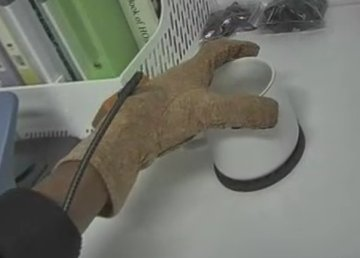
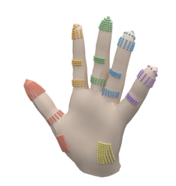
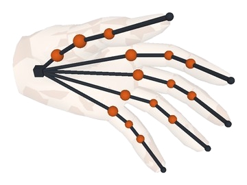
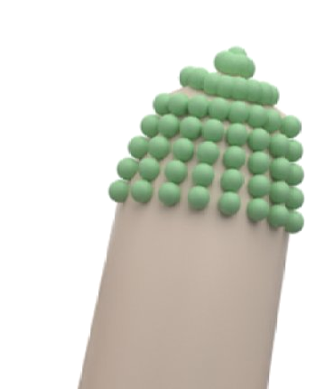
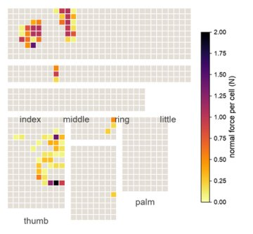

TouchTwin
Scaling Human Touch Data via Real-to-Sim-to-Real
Overview
Vision-based replays lack contact force
- A hand pose shows where each finger stops, not how far it closes, and contacts are often hidden.
- In our experiments:
- Vision gets grip wrong both ways: 0.31× the recorded force from pose imitation, 1.55× from vision-based replays.
- Physics alone does not recover it: the recorded grip is 1.6–3.7× the least force that holds the mug.
Rebuild each recording in MuJoCo, with touch driving the interaction
- Coding agents write the objects as physics-tested programs.
- A per-subject hand carries the glove's 880 taxels.
- The recorded touch closes each finger past the visible pose: where, when and how hard it presses.
Human-level grip, fewer missed contacts, more touch data
- Hand policy grips at 0.99× the recorded force: 20/20 held-out recordings, 35/36 perturbed tests.
- Missed real contact frames drop from 32% to 13%.
- Touch data scales without new capture:
- Each replay seeds perturbed demos (other grasps, motion, grip, object) with physics-resolved force labels.
- A simulation-conditioned video model renders them as realistic video in new views and scenes.
Full abstract
Human demonstrations are becoming the main source of data for dexterous manipulation, and real-to-sim-to-real pipelines multiply each demonstration in simulation. These pipelines rebuild the interaction from vision, which recovers how the hand moves. Which fingers touch, when, and how hard remain unobserved, because a hand pose shows where each finger stops on the surface rather than how far it is driven to close. This gap is a force gap: a hand policy that imitates the observed pose grips held-out objects with 0.31× the recorded force, and a policy trained on physics replays of vision-tracked poses grips with 1.55×. TouchTwin closes the gap with measured human touch. Each selected TouchScale recording, captured with head and wrist RGB-D cameras and an 880-taxel glove, is rebuilt in MuJoCo. Coding agents write the objects as physics-tested programs, and a per-subject tactile hand replays the interaction with the recorded touch setting the contact and the closing force of each finger. In simulation, a policy trained on touch-grounded replays grips at 0.99× the recorded force and succeeds in 20/20 trials on held-out recordings and 35/36 unseen perturbations; a contact predictor trained on them misses 13% of real contact frames, against 32% for vision-based replays. Each replay also seeds perturbed demonstrations with simulated contact and force labels, rendered as realistic video in new views and scenes. Project page with videos: https://touchtwin.github.io.
- 1Real → SimPhysics-tested objects, tactile hands
- 2Real → SimTouch-driven physics replay
- 3Sim → RealSimulation-conditioned video
- 4Sim → SimPerturbations
- 5Sim → RealContact prediction, hand policy
Physics-tested objects and tactile hands
Coding agents write each object as a physics-tested MuJoCo program; per-subject hands carry the glove's 880 taxels.
Tactile hands

1Record
2Fit
3Rig
4Taxels
5Check
880 taxels on 15 pads (rows × columns as on the glove), one per 1.5 mm glove cell.
Objects
Drag an object to turn it. Joints open and close as in the simulator, latches before lids.
Real2Sim
The recorded touch sets where, when and how hard each finger presses; checks and a review agent compare the replay with the recording.
Sim2Real
Simulation makes generated video follow the physics: conditioned on the simulated hand and object, Wan2.2 comes closest to the real video.
| Video generation | PSNR ↑ | SSIM ↑ | LPIPS ↓ | DINO ↑ |
|---|---|---|---|---|
| Sim render only | 7.79 | 0.309 | 0.757 | 0.537 |
| First frame + text (baseline) | 15.36 | 0.663 | 0.489 | 0.854 |
| Baseline + depth control | 18.55 | 0.759 | 0.276 | 0.914 |
| Baseline + sim control (ours) | 18.89 | 0.766 | 0.258 | 0.928 |
Generated vs. real video (same first frame, prompt and seed).
Perturbations
Each replay seeds perturbed demonstrations (other grasps, motion, grip and object) with physics-resolved force labels.
(a)Other grasps and perturbations
(b)Perturbed until the mug drops
(c)Touch beyond the glove
Touch closes the force gap
Models trained on touch-grounded replays, tested on held-out recordings.
Contact prediction
Touch-grounding is essential for contact accuracy.
| Contact prediction, trained on | F1 ↑ | Missed contact ↓ | Press dur. err. ↓ |
|---|---|---|---|
| Vision-based replays | 0.778 | 32.2% | 1.01 s |
| Touch-grounded replays (ours) | 0.890 | 13.1% | 0.61 s |
Contact prediction on held-out human-ego recordings. Press dur. err.: |predicted − true| press time per finger.
Hand policy
Touch supplies information beyond surface-level hand positions.
| Hand policy, trained on | Held-out recordings ↑ | Grip vs. recording | Simulated test ↑ |
|---|---|---|---|
| Observed finger pose | 17/20 | 0.31 | 26/36 |
| Vision-based replays | 15/20 | 1.55 | 33/36 |
| Touch-grounded replays (ours) | 20/20 | 0.99 | 35/36 |
Hand policy on held-out recordings and simulated tests; success: slip ≤ 5 mm, set down ≤ 30 mm off.